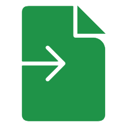

<div class="grid-container">
  <div class="grid-toolbar">
    <div class="toolbar-actions">
      <a href="assets/fichiers/fichier.xlsx" download="fichier.xlsx">
        
      </a>
      <button class="btn-nouveau-contact" (click)="openAddDialog()">
        
        Nouveau contact
      </button>
    </div>
  </div>

  <kendo-grid
    [data]="(contactService.contacts$ | async) ?? []"
    (edit)="editHandler($event)"
    (remove)="removeHandler($event)"
    [autoSize]="true">
<kendo-grid-column field="societe" title="Société" [width]="60" [hidden]="false">
    </kendo-grid-column>
<kendo-grid-column field="nom" title="Nom" [width]="60" [hidden]="isMobile">
    </kendo-grid-column>
<kendo-grid-column field="prenom" title="Prénom" [width]="60" [hidden]="isMobile">
    </kendo-grid-column>
<kendo-grid-column field="pays" title="Pays" [width]="60" [hidden]="isMobile || isTablet">
    </kendo-grid-column>

    <kendo-grid-command-column title="Action" [width]="30">
      <ng-template kendoGridCellTemplate>
        <div style="display: flex; justify-content: center; align-items: center; gap: 8px">
          <button kendoGridEditCommand themeColor="base" aria-label="Éditer">
            
          </button>
          <button kendoGridRemoveCommand themeColor="error"
            [svgIcon]="deleteIcon" aria-label="Supprimer">
          </button>
        </div>
      </ng-template>
      <ng-template kendoGridEditTemplate>
        <button kendoGridSaveCommand themeColor="primary">Sauvegarder</button>
        <button kendoGridCancelCommand themeColor="base">Annuler</button>
      </ng-template>
    </kendo-grid-command-column>
  </kendo-grid>


@if (isDialogOpen) {
  <kendo-dialog
    [title]="isNewContact ? 'Nouveau Contact' : 'Modifier Contact'"
    [minWidth]="300"
    [width]="500"
    (close)="onDialogCancel()"
  >
    <app-contact
      [isNew]="isNewContact"
      [contact]="selectedContact"
      (save)="onContactSaved($event)"
      (cancel)="onDialogCancel()"
    >
    </app-contact>
  </kendo-dialog>
}